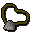

Hunter - Rabbit Snaring (level 27+)
Rabbit Snaring

These ferrets will become invaluable to you when rabbit snaring. A rabbit snare, bought from the Hunter stores of Yanille and Nardah, will also be required for your first rabbit trap.
Once these two have been collected, it is time to travel to one of the rabbit burrow areas in the Piscatoris Hunter area. These are recognisable by the pattern of six burrows, all facing towards each other.

Once caught, you will receive a hefty boost to your Hunter experience, bones, some rabbit meat and a rabbit's foot. Your ferret will not be 'used up' when rabbit snaring, although there is a chance that he may escape.
This trap can be smoked with a torch to remove your scent, increasing your chance of success when rabbit snaring. To do so you will need a torch, bought from the Hunter stores of Yanille and Nardah, and a Hunter level of 39 or above. Lighting the torch and using it on a set-up snare will greatly increase the chance of snagging yourself a reward.
Only so many rabbit snare traps can be laid at one point, depending on your Hunter level:
| Hunter level | Maximum Traps |
| 20 |
Two traps at a time |
| 40 |
Three traps at a time |
| 60 |
Four traps at a time |
| 80 |
Five traps at a time |
Rabbit Snare Locations
Catchable rabbits can only be found at the Piscatoris Hunter area. For directions, visit the Hunter - Locations page.
Rabbit Snare Creatures
Creature |
Levels Required |
Experience Gained |
Hunter reward |
Notes |
Location |
![[image]](../../img/main/kbase/skills/hunter/npcs/rabbit.gif) Rabbit |
27 |
144 | Bones, raw rabbit meat, rabbit foot | Rabbit's foot can be strung and made into rabbit-foot necklace. | Piscatoris Hunter Area |
The raw rabbit meat can be spit-roasted on an iron spit to make roast rabbit meat, or cooked normally (range or fire) to make cooked rabbit meat.
Rabbit Snare Rewards

The rabbit, aside from leaving you with bones and raw rabbit meat, will leave behind a lucky rabbit's foot. This small and innocuous item can be strung, with level 37 Crafting and a ball of wool, to make a rabbit-foot necklace - an invaluable tool for Woodcutting masters. This reward will greatly increase your chance of receiving a bird's nest when Woodcutting.

More articles in
Hunter (Members Only)
|
|